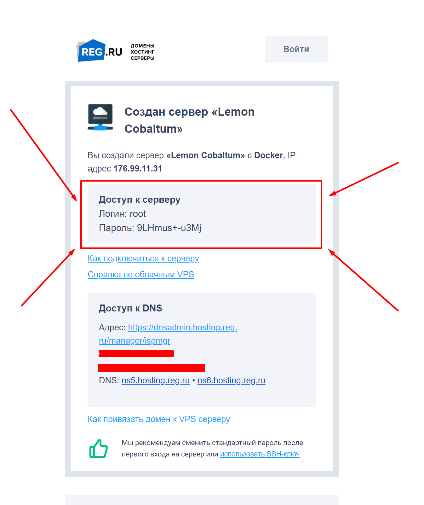
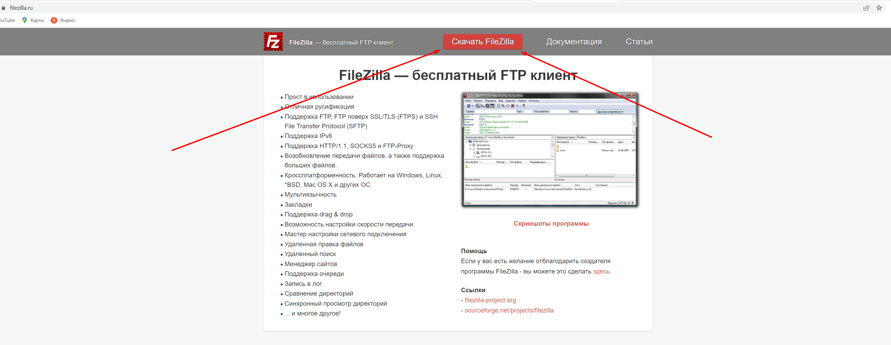
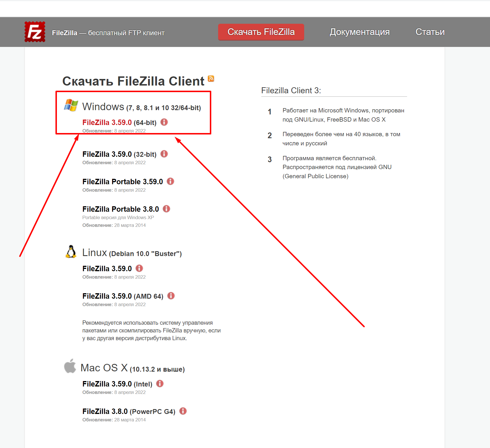
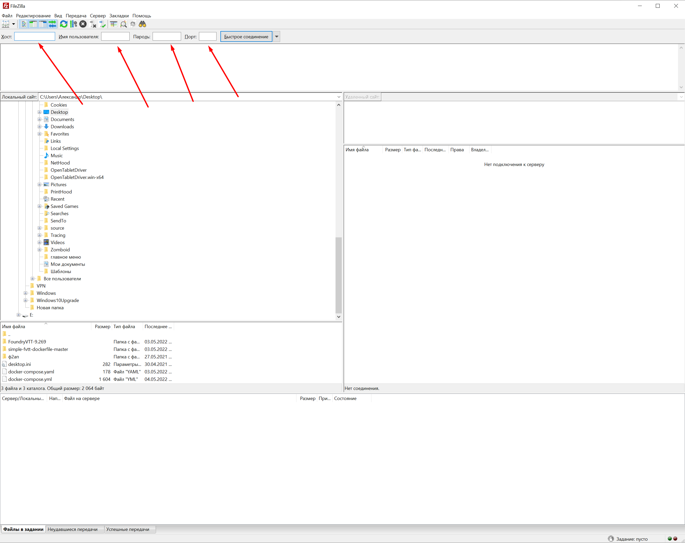
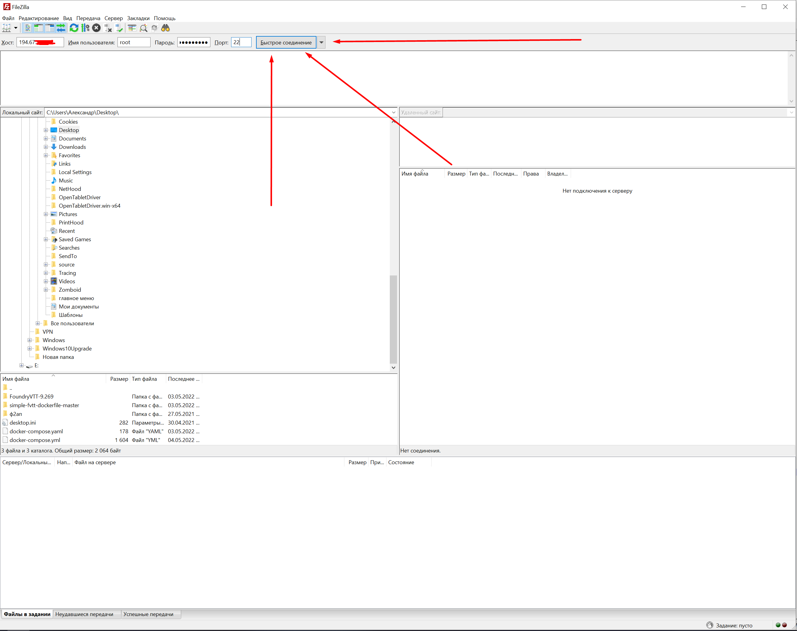
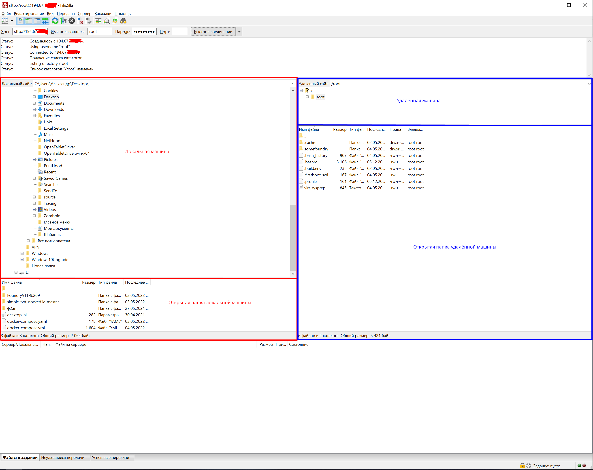

Для доступа к файлам сервера потребуется знать логин и пароль подключения к серверу, а так же любой ftp-клиент, в данном случае будет рассматриваться FileZilla.
1. Узнаём пароль от сервера
Логин и пароль от сервера пришли единожды в письме от сервиса, на котором был арендован хостинг (в данном случае - reg.ru)

Если письмо утеряно - пните кого-нибудь, чтобы пообщался с поддержкой сервиса и повторно выслал учётные данные
2. Качаем клиент
Расматриваемый в примере ftp-клиент FileZilla можно скачать с официального ресурса https://filezilla.ru/
1)

2)

Далее необходимо установить скачаный клиент
3. Подключение к серверу
После открытия клиента необходимо найти в интерфейсе поля ввода

Хост - IP-адрес сервера
Имя пользователя - логин из письма
Пароль - пароль из письма
Порт - 22 (всегда одинаковый, так надо)
Заполняем поля имеющимися данными и нажимаем кнопку "Быстрое соединение"

После установки соединения интерфейс будет выглядеть следующим образом:

Далее работа с удалёнными файлами схожа с работой с файлами в обычном проводнике.
После окончания работы достаточно просто закрыть клиент, соединение будет автоматически разорвано.